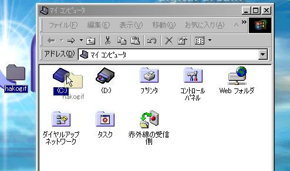
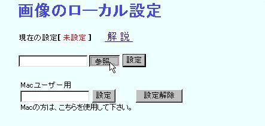
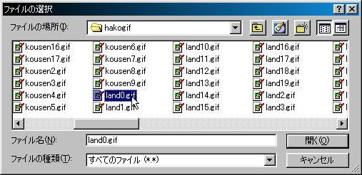
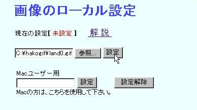
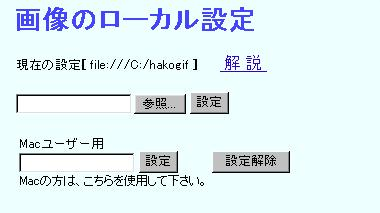

設定方法解説 Ｗｉｎ編
さきほどのファイルが解凍出来たら、それを「Ｃドライブ」等、適当なフォルダー内に移動させます。
ただ、半角カナが認識できないので、フォルダ名に半角カナが混じっている場所へは設置出来ません。
（デスクトップのみ例外的に可能となっております。）

これで準備完了です。
今度は箱庭のトップ画面の、画像のローカル設定欄にある参照ボタンを押して、
その後に現れるウィンドウで、さっき置いた画像ファイルの中の「land0.gif」を選択します。

参照を押して、「land0.gif」を選択して開くボタンを押します。

すると、以下のようになりますので、これで設定ボタンを押しましょう。

すると、現在の設定の所が、以下のように表示されるはずです。

これで、各諸島のアイコン画像が表示されてれば、ＯＫです。
さぁ、観光に行って見ましょう！
きっと、画面の表示が劇的に速くなっているはずです。
わからなかったら、是非是非ご質問お願いします！
これは、サーバー側のデータの転送量を減らすのにも非常に有効なので、
出来れば参加者全員に設定して欲しいくらいなのです。
ご協力をお願いします。
※設定を消去する場合は、設定解除ボタンを押すと元に戻ります。
この場合は、従来通りにサーバー側から画像を読み込みます。
画像には、一応著作権がありますので、無断で転載・改変する事を堅く禁じます。
ようは、勝手に使用しないで下さいと言う事です。
箱庭トーナメントの、ローカル表示のためだけに使用して下さい。 それ以外の事は一切認めません。
もう一度言いますが、わからなかったら必ず質問して下さい。
メールでも構いません。
この設定を行うと、開発・観光時、画像表示に時間が掛からなくなり、サーバー負荷も軽減出来るのです。
簡単なトラブルシューティング
＜画像が全く表示されなくなった＞
参照ボタンでしっかりと、land0.gifを選択していないか、設定に半角カナが含まれている。
「現在の設定」と書いてある所が文字化けしていたら、フォルダの場所を変更してやり直して下さい。(WIN)
＜元の状態に戻したい＞
設定解除ボタンを押すと、元に戻ります。
現在の設定の所に、未設定と書いてあれば、元に戻ってます。
戻る・・